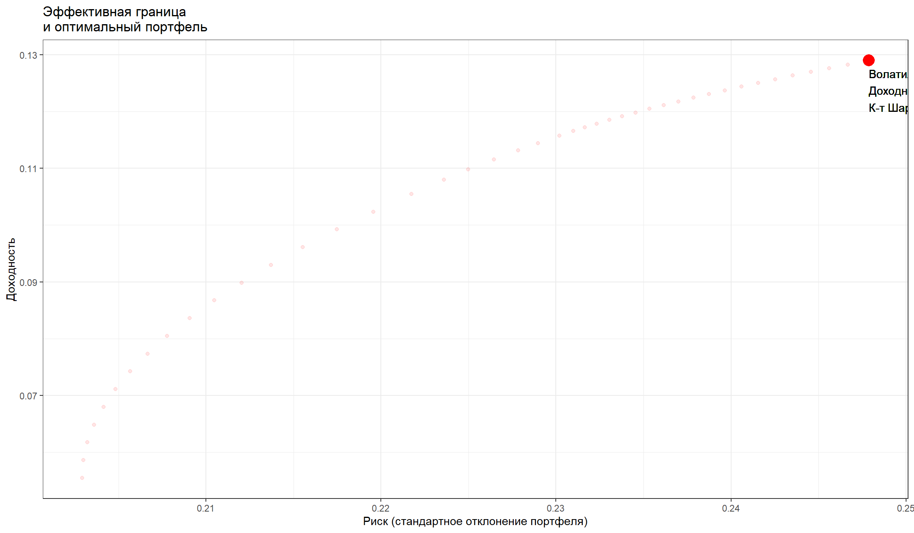

Оптимизация инвестиционных портфелей
“Количественные финансы”
Салихов Марсель (marcel.salikhov@gmail.com)
2020-02-04
Цели лекции
- изучить основы современной портфельной теории (портфельная теория Марковица)
- понять, что такое безрисковая ставка
- понять, как рассчитываются доходность и риск портфелей, состоящих рисковых и безрисковых активов
- разобраться в преимуществах диверсификации
- понять, что такое эффективная граница (effective frontier) и эффективный (оптимальный) портфель
- понять, что такое тангенциальный портфель (tangency portfolio)
- посчитать эффективный портфель, состоящий из акций 5 компаний (Газпром, Сбербанк, Норникель, Магнит, МТС)
- понять ограничения оптимизации “риск/доходность” на практике
Риск и доходность
- Базовая концепция в финансах – это компромисс между риском и доходностью.
- Если вам предлагают две инвестиции с одинаковым уровня ожидаемого риска, но разной ожидаемой доходностью, вы выберете вариант, который предлагает большую доходность.
- Если две инвестиции предлагают одинаковый уровень ожидаемой доходности, но разный уровень риска, то вы выберете инвестицию с меньшим уровнем риска.
- Но что делать, если вам надо распределить ваши свободные сбережения между 30 наиболее ликвидными бумагами, которые торгуются на российском (или на глобальном рынке) рынке. Как выбрать доли распределения в портфеле?
- Оптимальное распределение долей в портфеле – задача asset allocation – важный вопрос. Основная часть отличий в риск/доходностях разных портфелей связаны именно с распределением долей, а не с различиями в доходностях отдельных активов.
Гарри Марковиц (Harry Markowitz) – основатель современной портфельной теории
- Markowitz, H.M. (March 1952). “Portfolio Selection”. The Journal of Finance. 7 (1): 77–91 – статья, которая заложила основы современной портфельной теории (modern portfolio theory).
- Идеи MPT по сути привели к созданию всей отрасли пассивного инвестирования. В настоящее время индексные фонды управляют триллионами долларов.
Корреляция и ковариация двух активов – пример
Пусть у нас есть акции компаний - А и Б. Доходность акций компании А имеет проциклический характер, то есть растет, когда экономика на подъеме.
Доходность Б носит антициклический характер – уменьшается, когда экономика на подъеме, но растет, когда наступает спад.
Предположим, что у нас есть следующее распределение доходностей в зависимости от состояния экономики:
Таблица. Предполагаемая доходность для акций компаний А и Б
| Подъем |
0,33 |
0,385 |
-0,225 |
| Нормальное |
0,33 |
0,140 |
0,02 |
| Спад |
0,33 |
-0,105 |
0,265 |
Таблица. Расчет ожидаемой доходности для акций А
| Подъем |
0,385 |
0,245 |
0,060 |
| Нормальное |
0,140 |
0,000 |
0,000 |
| Спад |
-0,105 |
-0,245 |
0,060 |
Ожидаемая доходность = 1/3 (0,385 - 0,14 - 0,105) = 0,14
Дисперсия = 1/3 (0,060 + 0 + 0,060) = 0,04
Стандартное отклонение = 0,20
Таблица. Расчет ожидаемой доходности для акций Б
| Подъем |
-0,225 |
-0,245 |
0,060 |
| Нормальное |
0,020 |
0,000 |
0,000 |
| Спад |
0,265 |
0,245 |
0,060 |
Ожидаемая доходность = 1/3 (-0,225 + 0,2 + 0,265) = 0,02
Дисперсия = 1/3 (0,060 + 0 + 0,060) = 0,04
Стандартное отклонение = 0,20
Доходность портфеля из двух акций А и Б
Пусть у нас есть 100 тыс. рублей, который мы поровну распределили между акциями А и Б (по 50 тыс. рублей).
Какова ожидаемая доходность и стандартное отклонение этого портфеля?
Таблица. Доходность портфеля из акций А и Б
| Подъем |
0,385 |
-0,225 |
69,25 |
38,75 |
108,00 |
| Нормальное |
0,140 |
0,020 |
57,00 |
51,00 |
108,00 |
| Спад |
-0,105 |
0,265 |
44,75 |
63,25 |
108,00 |
Результат – независимо от состояния экономики доходность портфеля составляет 8%, стандартное отклонение = 0.
Любой риск исключен!
Ковариация и корреляция А и Б
Этот результат – полное исключение риска - связан с тем, что активы А и Б имеют абсолютную отрицательную корреляцию =-1.
Таблица. Ковариация и корреляция А и Б
| Подъем |
0,245 |
-0,245 |
-0,060025 |
| Нормальное |
0,000 |
0,000 |
0 |
| Спад |
-0,245 |
0,245 |
-0,060025 |
Ковариация = 1/3(-0,060025 + 0 + 0,060025) = -0,04
Корреляция = -0,04/(0,20 * 0,20) = -1
Ковариация и корреляция доходностей
- Ковариация позволяет определить, как изменяются доходности двух бумаг – в одном направлении (положительно), или в противоположных (отрицательно) направлениях.
\[\sigma_{1,2} = \sum p_i (X_1 - E(X_1))(X_2 - E(X_2)) \]
Корреляция – нормированная на произведение стандартных доходностей ковариация.
\[\rho = \frac{\sigma_{1,2}}{\sigma_1 \sigma_2} \]
Безрисковый актив
- Безрисковый актив – бумага, которая предлагает предсказуемую ставку доходности в выбранной валюте и в пределах горизонта данного инвестора.
- Если брать общую ситуацию, когда нет конкретного инвестора, то безрисковыми активам следует считать те из них, которые предлагают предсказуемую доходность инвестору в пределах короткого периода принятия решения – торгового дня.
- Если за расчетную единицу принят рубль, а период принятия решений – один рабочий день, то безрисковой ставкой доходности можно считать процентную ставку по коротким ОФЗ.
- Другие альтернативные варианты безрисковой ставки в рублях – ставка по депозитам Сбербанка или других банков, ставка на рынке межбанковского кредитования (MIACR или другие).
Портфель безрискового актива и единственного рискового актива
- Пусть вы решили инвестировать 100 тыс. рублей. Перед вами безрисковый актив, который предлагает доходность в 8% и рисковый актив с ожидаемой ставкой доходности в 14% и стандартным отклонением в 20% (фондовый индекс).
Какую часть от 100 тыс. рублей вам следует вложить в рисковый актив?
Пример расчета соотношений доходности и риска при разных долях в рисковом активе:
Таблица. Комбинация риск/доходность для портфеля из рискового и безрискового актива
| А |
0% |
100% |
8% |
0% |
| Б |
25% |
75% |
10% |
5% |
| С |
50% |
50% |
11% |
10% |
| E |
75% |
25% |
13% |
15% |
| D |
100% |
0% |
14% |
20% |
Формула для расчета ожидаемой доходности портфеля:
\[ E(r) = w E(r_s) + (1-w)r_f = r_f + w[E(r_s) - r_f] \] где \(w\) – доля портфеля в рисковом активе.
Если вы выразим \(w\), тогда получим
\[w = \frac{E(r) - r_f}{E(r_s) - r_f}\] Стандартное отклонение портфеля, состоящего из безрискового актива и рискового актива, равно произведению стандартного отклонения рискового актива на его долю в портфеле.
\[\sigma = \sigma_s w \]
Кривая риск/доходность - портфель из безрискового и рискового активов
Построим в R график риск/доходность портфеля для разных вариантов w:
rf = 0.08 # безрисковая доходность
r1 <- 0.14 # доходность рискового актива
sd1 <- 0.20 # ст. отклонение рискового актива
w <- seq(0,1, length.out = 200)
r_p <- w*r1 + (1-w)*rf
sd_p <- w*sd1
plot(sd_p, r_p, type = 'l', ylim = c(0,0.14), xlim = c(0,0.20), xaxs="i", col = 'red',lwd = 2,
main = 'Кривая риск/доходность - портфель из безрискового и рискового активов',
xlab = 'Стандартное отклонение портфеля', ylab = 'Доходность портфеля')

Соотношение риск/доходность для портфеля из безрискового актива и рискового актива предоставляет собой прямую линию.
Пересечение линии с нулем по оси х – безрисковая ставка.
Наклон линии – \(\frac{E(r_s)-r_f}{\sigma_s}\).
Угол наклона кривой характеризует дополнительную ожидаемую доходность, предлагаемую рынком для каждой дополнительной единицы риска, которую согласен нести инвестор.
Портфель из двух рисковых активов
Рассмотрим ситуацию, когда в портфеле есть два вида рисковых активов.
В этом случае необходим анализ соотношения риск/доходность портфеля (в прошлый раз мы считали, что риск безрискового актива равен нулю).
Ожидаемая доходность портфеля будет равна:
\[ E(r) = w E(r_1) + (1-w) E(r_2) \] формула дисперсии будет выглядеть следующим образом:
\[\sigma^2 = w^2\sigma_1^2 + (1-w)^2\sigma_2^2 + 2w(1-w)\rho \sigma_1 \sigma_2 \] (её можно вывести из обычного определения дисперсии).
Преимущества диверсификации
Важно: дисперсия портфеля зависит от корреляции между активами, в то время как ожидаемая доходность не зависит от нее.
Если мы предположим, что \(\rho = 1\), тогда
\[\sigma = w \sigma_1 + (1-w) \sigma_2 \] То есть, риск портфеля является взвешенной комбинацией рисков актива 1 и актива 2.
Однако в реальности \(\rho < 1\). Это означает, что риск портфеля будет меньше средневзвешенной комбинации рисков отдельных активов в портфеле. Это и есть преимущества диверсификации – возможность уменьшить риск без снижения ожидаемой доходности.
Распределение ожидаемых доходностей для рисковых активов двух видов
Пусть у нас имеется два рисковых актива (1 и 2). Параметры распределения их доходностей представлены в таблице:
Таблица. Распределение ожидаемых доходностей для рисковых активов двух видов
| Cреднее |
0,14 |
0,08 |
| Стандартное отклонение |
0,20 |
0,15 |
| Корреляция |
0,00 |
0,00 |
Рассмотрим соотношение риск/доходность для портфеля, который состоит из активов 1 и 2 в разных соотношениях.
** Таблица. Риск-доходость портфеля при разных соотношениях рисковых активов в портфеле**
| А |
0 |
100% |
0,0800 |
0,1500 |
| Б |
25% |
75% |
0,0950 |
0,1231 |
| min variance |
36% |
64% |
0,1016 |
0,1200 |
| С |
50% |
50% |
0,1100 |
0,1250 |
| D |
100% |
0% |
0,1400 |
0,2000 |
Кривая риск/доходность для портфеля из двух рисковых активов
Построим кривую риск-доходность для такого портфеля в R:
r1 <- 0.14
r2 <- 0.08
sd1 <- 0.20
sd2 <- 0.15
rho <- 0
w <- seq(0,1,length.out = 500)
r_p2 <- w*r1 +(1-w)*r2
sd_p2 <- sqrt(w^2*sd1^2 + (1-w)^2*sd2^2 + 2*w*(1-w)*rho*sd1*sd2)
plot(sd_p2, r_p2,type = 'l', xlim = c(0, 0.21), ylim = c(0.0575, 0.145), xaxs="i", col = 'black',lwd = 2,
main = 'Кривая риск/доходность - портфель из двух рисковых активов',
xlab = 'Стандартное отклонение портфеля', ylab = 'Доходность портфеля')
points(x = 0.12, y = 0.1016, pch = 19)
text(x = 0.12, y = 0.1016, labels = 'Портфель с минимальной дисперсией', adj = -0.1)

- Самая левая точка этого множества – портфель с минимальной дисперсией (minimum variance portfolio)
- Точки на кривой, которые имеют ожидаемую доходность не меньше чем у портфеля с минимальной дисперсией, составляют эффективную границу (effective frontier)
- Портфели, которые находятся на эффективной границе, называются эффективными портфелями.
Оптимальная комбинация рискованных активов
Теперь рассмотрим комбинации риск/доходность в ситуации, когда мы можем объединить безрисковый актив и активы 1 и 2.

- Точка пересечения прямой линии и кривой эффективного портфеля (T) является оптимальной комбинацией рискованных активов. Ее также называют тангенциальным портфелем (tangency portfolio).
В нашем случае это точка, которой соответствует w = 69,23% (доля рискованного актива 1) в портфеле. Это означает, что для такого портфеля: \(E(r_p) = 0,122\), а \(\sigma = 0,146\).
- Точка F – доходность безрискового актива
- R1, R2 – портфели состоящие из полностью из актива 1 или актива 2
- Красным выделена эффективная граница. Портфели которые находятся на ней – эффективные, портфели, которые находятся на черной линии - не эффективны.
- P – типичный портфель, который находится на эффективной границе (эффективный портфель)
Показатель Шарпа
- Обратите внимание, что голубая линии, которая соединяет точку F и T лежит выше пурпурной линии, которая соединяет точку F и типичный портфель. Это означает, что для каждого значения \(\sigma_p\) – голубая линия дает лучшее соотношение риск-доходность, чем пурпурная.
- Угол наклона каждой линии, которая проходит через точку F и точку на кривой – является “показателем Шарпа” (Sharpe ratio)
Показатель Шарпа равен:
\[\frac{E(R_p) - r_f}{\sigma_p} \]
- по сути показатель Шарпа представляет собой вознаграждение за риск.
- Любая линия, которая имеет больший угол наклона (показатель Шарпа), обеспечивает более высокий уровень ожидаемой доходности для заданного уровня риска. Поэтому чем выше показатель Шарпа, тем лучше – неважно, какой уровень риска вы хотите принять.
- Точка T будет иметь максимальное значение показателя Шарпа.
Оптимальный портфель из безрискового и рисковых активов
- Оптимальный (эффективный) портфель из безрискового и рисковых активов сочетает тангенциальный портфель и безрисковый актив.
- Эффективный портфель имеет более высокое ожидаемое значением по сравнению с другими портфелями, которые имеют такое же или меньшее значение риска
- Эффективный портфель имеет меньший уровень риска по сравнению с другими портфелями, которые имеют аналогичное или большее значение доходности
Влияние корреляции на уровень риска портфеля
- Положительная корреляция между активами увеличивает риск портфеля, отрицательная корреляция - уменьшает риск. Посмотрим на изменение точки T (тангенциальный портфель) при разных значениях корреляции рисковых активов:

Эффективный портфель со множестом рисковых активов
- В общем случае у нас может быть множество рисковых активов с разными характеристиками риск-доходности. В матричном виде это означает, что мы минимизируем следующее выражение:
\[w^T \Sigma w - q R^Tw \rightarrow min\] где
- \(w\) – вектор весов портфеля, такой что (\(\Sigma w_i = 1\))
- \(\Sigma\) – матрица ковариаций активов
- \(q \geq 0\) – фактор склонности к риску, такой что при q= 0 мы предпочитаем минимальный риск, при \(q -> \infty\) мы готовы идти на неограниченный риск.
- \(R\) – вектор доходностей активов
- \(w^T \Sigma w\) – дисперсия доходностей портфеля
- \(R^T\) – ожидаемая доходность портфеля.
Мы можем использовать численные методы, чтобы найти оптимальные значения весов. Обычно используют методы квадратичного программирования, которые позволяют находить экстремумы квадратичных функций при заданных линейных ограничениях. В R можно использовать функцию solve.QP из пакета quadprog.
Портфель – Газпром, Сбербанк и Норникель, Магнит и МТС
Рассмотрим портфель из акций 5 российских компаний из разных отраслей.
Loading required package: xts
Warning: package 'xts' was built under R version 3.6.2
Loading required package: zoo
Attaching package: 'zoo'
The following objects are masked from 'package:base':
as.Date, as.Date.numeric
Attaching package: 'PerformanceAnalytics'
The following object is masked from 'package:graphics':
legend
Loading required package: data.table
Attaching package: 'data.table'
The following objects are masked from 'package:xts':
first, last
Примечание: в данном случае мы не учитываем выплаченне дивиденды в доходностях.
Доходность и риск
Рассчитаем показатели доходности и риска (стандартного отклонения) с помощью функций из пакета PerformanceAnalytics.
GAZP SBER GMKN MGNT MTSS
Annualized Return 0.02057122 0.1228863 0.1350664 -0.002274552 0.04355345
Максимальная доходность (% в год) у Сбербанка (12,3%), у Магнита - минимальная доходность (около 0% за период в год).
GAZP SBER GMKN MGNT MTSS
Annualized Standard Deviation 0.2578339 0.3192436 0.2830405 0.3207232 0.2821095
Показатели риска максимальны у акций Сбербанка (32,0%), минимальны – у акций Газпрома.
График риск/доходность
Отобразим полученные сочетания риск-доходность для 5 бумаг на графике:
r <- Return.annualized(rtns, geometric = FALSE)
sd <- StdDev.annualized(rtns, geometric = FALSE)
tab <- cbind(round(as.numeric(r),2),round(as.numeric(sd),2), names(rtns))
tab <- as.data.frame(tab)
tab[,1] <- as.numeric(as.character((tab[,1])))
tab[,2] <- as.numeric(as.character((tab[,2])))
names(tab) <- c('Доходность' ,'Волатильность', 'Тикер')
require(ggplot2)
Loading required package: ggplot2

Матрица ковариаций
GAZP SBER GMKN MGNT MTSS
GAZP 0.0002638029 0.0001885060 1.129597e-04 0.0001102452 1.329534e-04
SBER 0.0001885060 0.0004044304 1.264577e-04 0.0001426970 1.682525e-04
GMKN 0.0001129597 0.0001264577 3.179044e-04 0.0000969705 9.763143e-05
MGNT 0.0001102452 0.0001426970 9.697050e-05 0.0004081879 1.217378e-04
MTSS 0.0001329534 0.0001682525 9.763143e-05 0.0001217378 3.158166e-04
- Матрицы ковариаций показывают попарные значения ковариаций в портфеле
- Эти матрицы являются одним из основных элементов при портфельном анализе, однако сами по себе достаточно трудны для восприятия
- Для оценки связи между переменными лучше использовать матрицы корреляций
Матрица корреляций
GAZP SBER GMKN MGNT MTSS
GAZP 1.0000000 0.5771165 0.3900634 0.3359616 0.4606194
SBER 0.5771165 1.0000000 0.3526754 0.3512069 0.4707846
GMKN 0.3900634 0.3526754 1.0000000 0.2691915 0.3081229
MGNT 0.3359616 0.3512069 0.2691915 1.0000000 0.3390610
MTSS 0.4606194 0.4707846 0.3081229 0.3390610 1.0000000
- Наибольшие значения корреляций наблюдаются для Газпрома и Сбербанка, минимальные значения корреляций - для Норникеля и Магнита.
- Между всеми бумагами наблюдается достаточно сильная корреляция
Расчет эффективной границы портфеля
- Мы используем функция
eff.frontier, которая позволяет находить веса бумаг, максмизирующая показатель Шарпа портфеля.
- Она также позволяет задавать ограничения на значения весов. Если не допускается существование коротких позиций в портфеле, то каждый из весов должен быть больше или равен 0.
- Мы также можем задать максимальную долю одной бумаги в портфеле (аргумент
max.allocation), с тем, чтобы уменьшить концентрацию портфеля.
GAZP SBER GMKN MGNT MTSS Std.Dev Exp.Return
1 0.2964305 0.02216109 0.2755310 0.1794940 0.2263834 0.2029129 0.05548771
2 0.2804189 0.03633911 0.2891005 0.1709855 0.2231560 0.2029898 0.05861219
3 0.2644073 0.05051713 0.3026700 0.1624770 0.2199285 0.2032206 0.06173666
4 0.2483958 0.06469514 0.3162395 0.1539686 0.2167011 0.2036046 0.06486113
5 0.2323842 0.07887316 0.3298089 0.1454601 0.2134736 0.2041410 0.06798560
6 0.2163726 0.09305118 0.3433784 0.1369517 0.2102462 0.2048286 0.07111008
sharpe
1 0.2734559
2 0.2887444
3 0.3037914
4 0.3185642
5 0.3330326
6 0.3471687
GAZP SBER GMKN MGNT MTSS Std.Dev Exp.Return sharpe
474 0 0.5 0.5 0 0 0.25 0.13 0.52
475 0 0.5 0.5 0 0 0.25 0.13 0.52
478 0 0.5 0.5 0 0 0.25 0.13 0.52
480 0 0.5 0.5 0 0 0.25 0.13 0.52
491 0 0.5 0.5 0 0 0.25 0.13 0.52
- Эффективный портфель – тот, который имеет максимальное значения показатель Шарпа.
- В нашем случае это портфель, который состоит из 44% Сбербанк, 27% Норникеля и 50% Магнита.
- Обратите внимание, что доля Магнита равно максимальной доле (выставленное ограничение)
Эффективная граница
График эффективной границы
Warning: Ignoring unknown aesthetics: label

Отметим отдельные бумаги на графике:

Эффективный портфель с короткими позициями
Рассмотрим эффективный портфель, в котором разрешены короткие позиции. Это означает, что некоторые веса могут быть отрицательными.
GAZP SBER GMKN MGNT MTSS Std.Dev Exp.Return sharpe
48 -0.14 0.5 0.5 -0.1 0.24 0.25 0.14 0.54
Оптимальный портфель с короткими позициями предлагает нам занять короткую позицию по Газпрома и Магнита, по другим – длинные позиции.
Риск-доходность портфеля с короткими позициями
Warning: Ignoring unknown aesthetics: label

Разрешение занимать короткие позиции позволило повысить доходность портфеля, но и повысило уровень риска. Однако к-т Шарпа для этого портфеля больше (0,77 вместо 0,63).
Ограничение оптимизации портфелей по риск-доходности
- Все оценки доходности и риска, которые мы делали, основывались на исторических данных. Мы использовали выборочные значения доходностей, дисперсий и ковариационной матрицы (корряляции активов) и предполагали, чтоб они хорошо отражают ожидаемые значения. Это достаточно большое количетсво параметров. Как показывает практика, классифические портфели по Марковицу, максимизирующие показатель Шарпа, являются нестабильными. Существуют другие методы, которые позволяют оценивать ковариационную матрицу, к примеру, метод Ледуа-Вульфа ( Ledoit-Wolf, 2003 ). По сути это shrinkage метод, который "стабилизирует ковариационную матрицу – возвращает экстремальные значения корряляций к центральным значениям.
- Можно также использовать другие методы для оценок ожидаемых доходностей вместо выборочных исторических доходностей. Одним из таких методов является метод Джеймса-Стайна ( James–Stein estimator, 1961), который также основан на идее shrinkage.
- В классическом варианте оптимизации по Марковицу, мы предполагаем, что доходности имеют нормальное распределение – полностью описываются средним и стандартным отклонением. Однако мы знаем, что доходности не распределены нормально. Есть методы, которые позволяют обойти эти ограничения.
Оптимальный портфель из ETF, торгующихся на Московской Бирже
- портфели доступны и регулярно обновляются на http://models.fief.ru/shiny/portfolio/
- На Москоской Бирже есть торгуемые биржевые фонды (ETF), доходность которых призвана повторять доходность различных российских и международных биржевых индексов. Преимущества - позволяет “не выбирать” отдельные активы и следить за ними, ниже издержки по сравнению с ПИФами, удобство ликвидности.
- Оценка out-of-sample доходностей различных оптимальных инвестиционных инвестиционных портефелей.
Global Minimum Variance Portfolio (GMVP) – портфель, минимизирующий риск портфеля.
Maximum Sharpe Ratio Portfolio (MSRP) – портфель, максимизирующий доходность портфеля, скорректированную на его риск (по Марковицу).